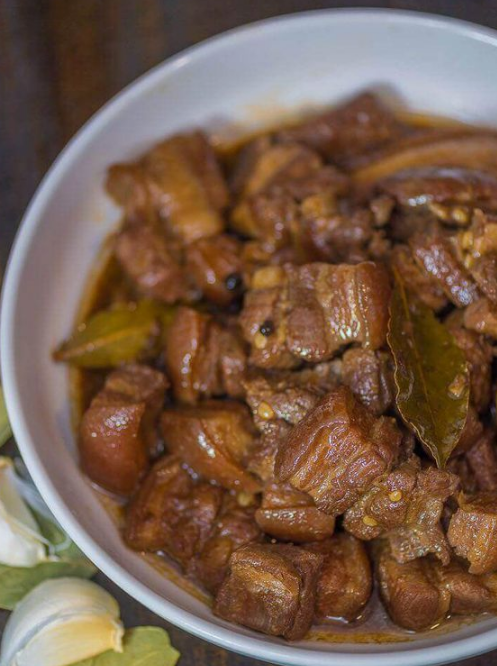

~FEATURED RECIPE~

Description
Basic Filipino Pork Adobo with Soy Sauce, Vinegar, and Garlic. This delicious dish is perfect when served over newly cooked white rice.
Prep Time: 10 minutes
Cook Time: 1 hour
Servings: 4 people
Recipe Credits:
Panlasang Pinoy
Ingredients
2 lbs pork belly
2 tablespoons garlic minced or crushed
5 pieces dried bay leaves
4 tablespoons vinegar
1/2 cup soy sauce
1 tablespoon peppercorn
2 cups water
Salt to taste
Steps
Combine the pork belly, soy sauce, and garlic then marinade for at least 1 hour
Heat the pot and put-in the marinated pork belly then cook for a few minutes
Pour remaining marinade including garlic.
Add water, whole pepper corn, and dried bay leaves then bring to a boil. Simmer for 40 minutes to 1 hour
Put-in the vinegar and simmer for 12 to 15 minutes
Add salt to taste
Serve hot. Share and enjoy!